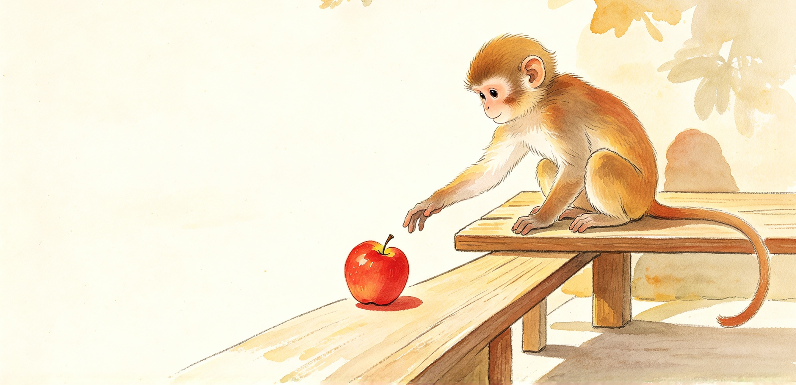
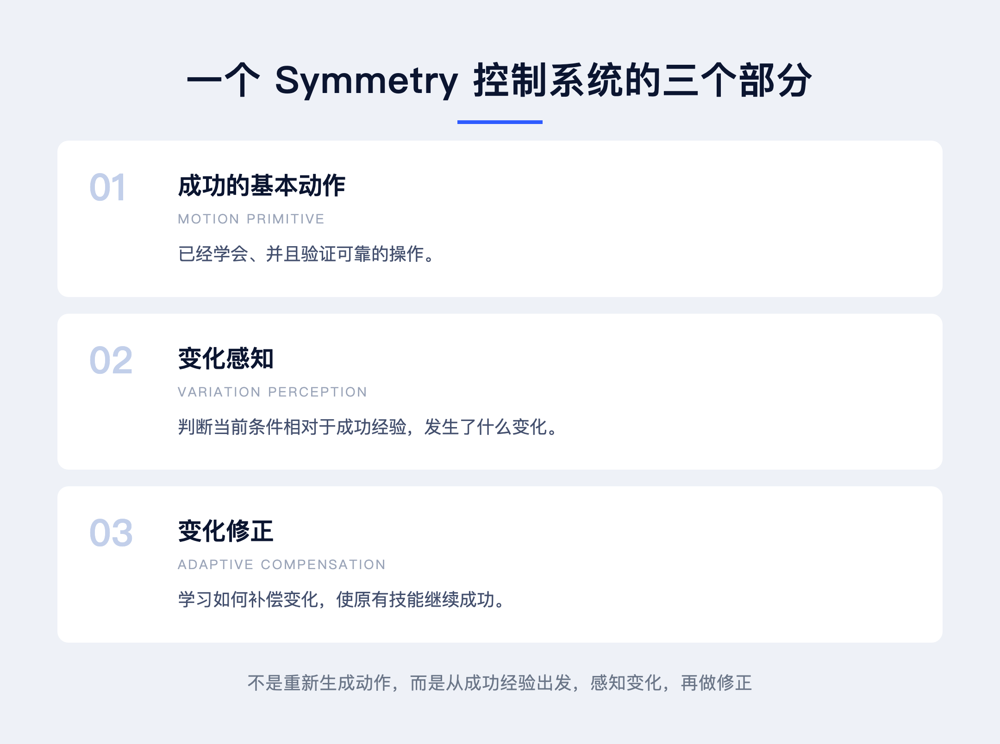

一、我们应该如何理解智能？
我们应该如何看待智能？特别是生物智能？
达尔文的进化论给我们一个重要启发：适应环境，适者生存。
如果生存是生物最基本的目标，那么智能的意义，就是帮助生物在不同环境下生存下来。
因此，对于大多数生物智能而言，智能并不是一个简单的打分问题。它不是为了获得更高的分数，而是为了在变化的环境中，继续生存。
环境不断变化，生物也需要不断调整自己的行为。
从这一理念出发，我们或许应该对具身智能有一种新的理解。
如果希望机器人像人或其他动物一样运动，就需要首先理解：人和动物为什么能够运动？它们的运动能力建立在什么基础上？
我们的理解是两个核心概念：
运动基元（Motion Primitive）与适应性（Adaptability）。
生物并不是每遇到一种新情况，就从头学习一个全新的动作。它能够利用已经掌握的运动能力，根据环境变化调整动作，使已有经验继续有效。
正是建立在这一理解上，我们开发了 Symmetry Foundation Model，一种面向具身运动的基础模型。
它的核心理念，就是通过运动基元与适应性，实现技能的复用与迁移。
● ● ●
二、运动基元、不变性与群论
我们希望把复杂动作分解为运动基元，再学习每个基元在不同条件下的适应性。
这一思想与数学中的群论（Group Theory）有关。
群论研究具有特定组合规律的变换，而对称性描述对象在某些变换下保持不变的性质。
我们关心的，是变化与不变之间的关系。
对于机器人运动而言，环境、位置、负载、速度和工具都可能变化。但在这些变化之中，某些成功操作所依赖的关系可以保持不变。
因此，我们希望利用群论中的对称性与不变量思想，寻找运动中可以复用的部分，并学习如何根据外部变化调整具体动作。
这构成了 Symmetry Control Theory 的数学出发点。
这里的群论首先是一种理论指导。并非所有物理变化都天然构成严格数学意义上的群。具体哪些变换构成群、哪些性质是不变量，需要在模型的数学定义中进一步建立。
● ● ●
三、一个例子：猴子拿苹果
如何理解这个思想？
举一个简单的例子。
一只猴子拿起苹果，把它送到嘴里。

这是与生存直接相关的一种基本操作。
第一次，猴子成功了。
它伸出手，抓住苹果，然后把苹果送进嘴里。
第二天，猴子还想吃苹果，但情况发生了变化。
第一种变化：苹果放得更远了。
猴子需要改变身体和手臂的姿态，才能拿到苹果。
一般的 AI 思路可能是：面对新的苹果位置，如何重新生成一个动作？
但我们的思路不同。
我们首先关注已经成功的动作中，有什么是不变的。
例如，第一次成功抓取苹果时，手与苹果之间形成了一个合适的相对姿态。
当苹果的位置改变时，这个抓取姿态并不一定需要改变。
猴子只需要调整手臂，使手到达新的位置，同时维持手与苹果之间原有的相对抓取关系。
变化的是手臂的运动，不变的是手与苹果之间成功的抓取关系。
从视觉上看也是如此。
苹果放在不同位置时，猴子看到的是不同的图像。
但它希望实现的，仍然是同一种抓取。
因此，视觉系统需要从不同的图像中识别目标位置的变化，而运动系统需要根据这种变化调整手臂。
它们共同维持已经成功的抓取关系。
● ● ●
四、变化的感知与动作的修正
真实情况当然更加复杂。
苹果不仅可能放在不同位置，也可能具有不同的大小、重量和其他物理特性。
例如：
苹果大小发生变化。
手指的开合程度需要改变。
苹果重量发生变化。
抓握力需要调整，手臂也可能需要补偿额外负载带来的动力学误差。
苹果位置发生变化。
需要改变手臂的位置和姿态。
不同的变化，需要用不同的方法感知，也需要采用不同的方法修正。
有些变化主要由视觉感知，有些变化需要通过力觉、本体传感器或运动历史来估计。
有些变化通过调整空间目标来补偿，有些则需要调整关节力矩、接触力或运动速度。
但这些变化的处理，都指向同一个目的：
维持已经成功的操作经验，使它在不同条件下仍然有效。
所以，我们认为一个基本的 Symmetry 控制系统包含三个部分：
- 01成功的基本动作（Motion Primitive）：已经学会并验证可靠的操作。
- 02变化感知（Variation Perception）：判断当前条件相对于成功经验发生了什么变化。
- 03变化修正（Adaptive Compensation）：学习如何补偿变化，使原有技能继续成功。

这就是 Symmetry Control Theory 的基本思想。
它不是每次面对新条件都重新生成完整动作，而是从已经成功的动作出发，感知变化，再进行必要的修正。
● ● ●
五、从一次成功到适应不同负载
再举一个机器人控制的例子。
假设机器人已经能够完成一次准确的抓取定位。
这是一个基本的成功技能。
接下来，我们改变被抓取物体的重量。
机器人发现，不同重量会产生不同的定位偏差。
于是，机器人开始学习：在不同负载条件下，应该如何补偿定位误差？
这一步可以先学习负载变化与控制补偿之间的关系。
之后，再增加一个感知模块，使机器人能够从关节位置、速度、力矩及历史运动数据中，估计当前物体的重量或相关动力学特性。
然后，将感知能力和补偿能力连接起来。
这样，当机器人面对不同重量的物体时，就能够根据感知结果自动调整控制，而不是重新学习整个抓取动作。
之后还可以继续增加新的变化。
例如，不同的抓取位置，不同的运动速度要求。
每增加一种变化，就学习相应的感知方法和补偿方法。
先学习一个技能，再学习一种变化的感知，最后学习一种相应的补偿技术。
随着这种过程不断重复，原来的基本技能就能够适应越来越多的条件。
这是一种渐进式的能力增长。
● ● ●
六、究竟什么是成功经验？
这里有一个很有意思的问题：
究竟什么是成功经验？
它并不只是完成了一次任务那么简单。
我们的理解是，成功经验首先应当具有一定的稳定性。
例如，机器人抓取苹果并成功送到指定位置，这只能说明它在这一次条件下完成了任务。
但如果机器人稍微偏离目标位置，或者受到一点外部扰动，整个操作就失败了，那么这种成功经验并不可靠。
我们希望的成功经验，是能够自动修正小的误差，不会因为微小扰动而失稳或崩溃。
也就是说，它应当具有一定的鲁棒性和容错能力。
在一个合理的条件范围内，即使初始位置、控制误差或外部扰动有所变化，系统仍然能够维持成功操作。
通俗地说：
成功经验，就是一种比较容易成功、比较可靠的操作方式。
这比单纯判断一次任务是否完成更重要。
因为只有足够稳定、可靠的动作，才值得作为运动基元保存下来，并进一步学习如何适应新的环境。
● ● ●
七、Symmetry Foundation Model：学习如何适应动作
基于上述思想，我们希望建立 Symmetry Foundation Model。
它的核心并不是针对每一种环境、每一种物体和每一种任务，分别训练一种全新的动作。
而是首先学习一些稳定、可靠的基本技能，再逐渐增加对不同变化的感知与补偿能力。
这些变化可能来自：
物体的位置、大小和重量，运动速度的要求，机器人的身体结构，工具的物理特性，以及外部环境的变化。
模型将这些变化及其相应的适配关系编码到神经网络中。
当面对新的条件时，系统首先识别当前情况与已有成功经验之间的差异，再通过相应的控制补偿，使原有技能尽可能继续有效。
因此，Symmetry Foundation Model 学习的核心，可以理解为：
不是每次重新学习怎样完成动作，而是学习怎样让已经成功的动作，在变化的条件下继续成功。
这也为能力迁移提供了一种方法。
已经掌握的运动基元不必在每一种新条件下重新训练。
系统可以通过不断增加变化感知与补偿能力，扩展技能的适用范围。
● ● ●
八、从特殊到普遍，从变化到无穷
传统的学习方式，常常从大量不同的操作数据中寻找共同规律。
我们的思路则是从一个已经成功、比较可靠的具体动作出发。
首先理解它为什么成功，哪些关系需要保持稳定。
然后逐渐引入变化，学习不同条件下的适应方式。
苹果远了一点，调整手臂。
苹果大了一点，调整手指。
苹果重了一点，调整抓握力和动力学补偿。
目标运动速度改变，就调整运动控制。
每增加一种变化感知与修正能力，原有技能能够适用的条件就扩大一些。
于是，一个原本只在特定条件下成功的动作，逐渐成为能够适应更多条件的通用技能。
从一个特殊的成功经验出发，通过学习变化及其补偿，逐渐获得更加普遍的能力。
这正是我们希望借鉴群论与对称性思想的原因。
我们并不是要求机器人面对所有变化时都执行完全相同的动作。
相反，机器人需要主动改变自己的动作，才能维持操作中真正重要的关系。
变化的是实现动作的方法，不变的是成功操作所依赖的关系。
这就是 Symmetry Control Theory 所希望表达的智能观。
它不是简单追求一次任务的最高分数，而是让已有的成功经验能够在更多不同条件下保持可靠。
智能的价值，并不只在于完成一次任务，而在于环境变化之后，仍然能够完成它。
从特殊到普遍，从变化到无穷。
说明：本文将「智能就是适应性」作为对达尔文进化思想的概括，而非未经核实的达尔文原文引语。群论与运动适应之间的严格数学关系、可保持的不变量及其适用条件，仍有待后续理论定义与实验验证。